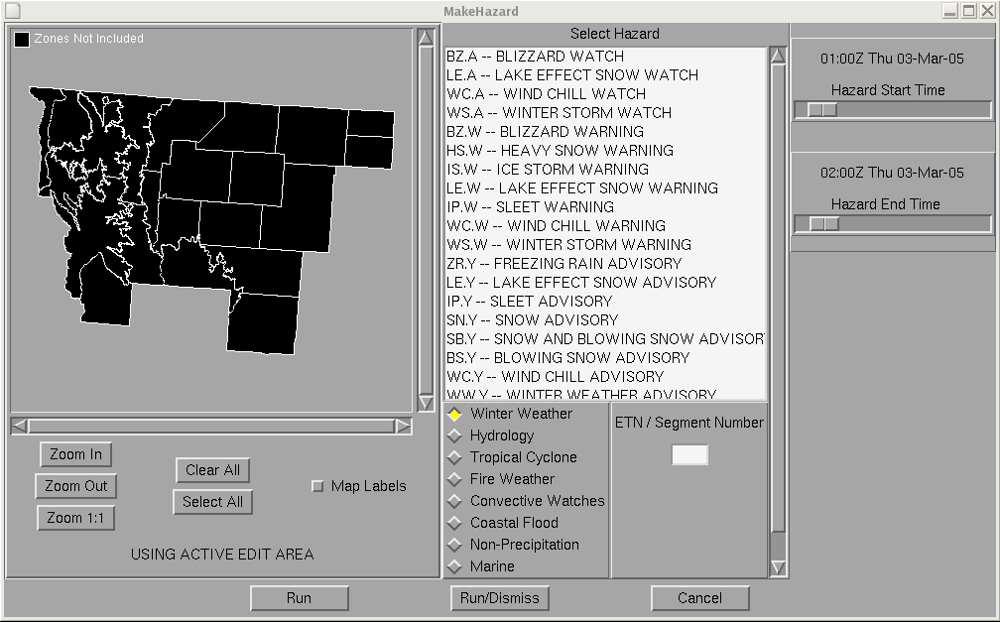
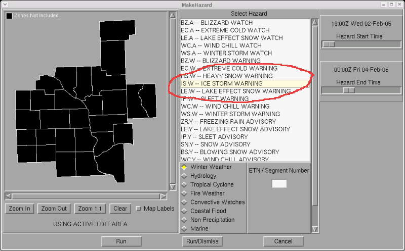
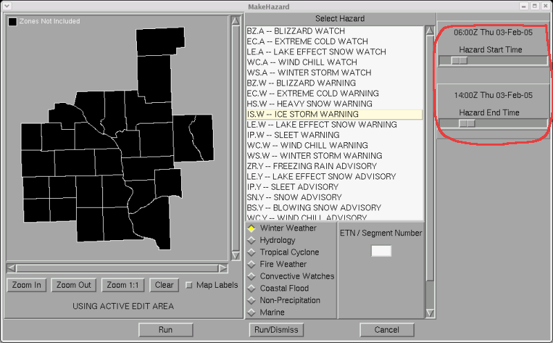
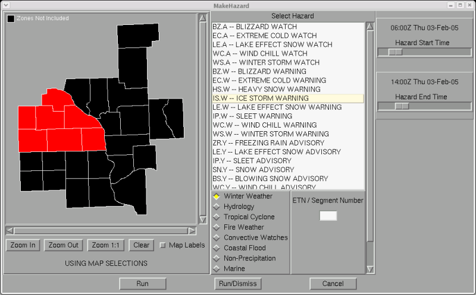
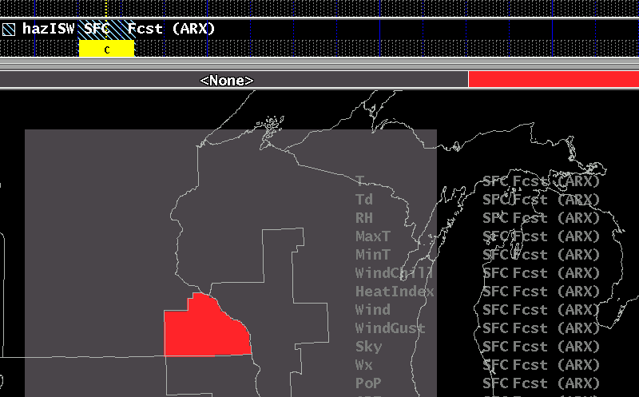
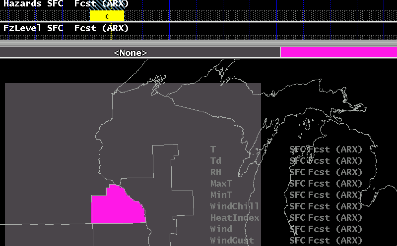
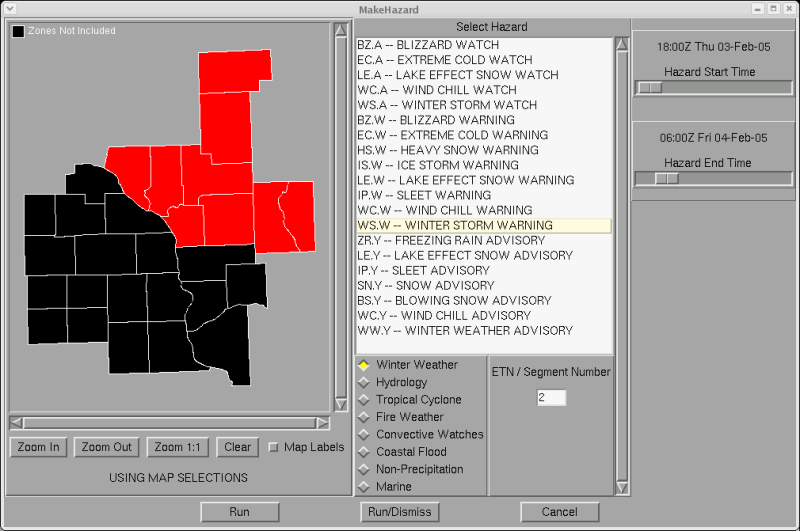
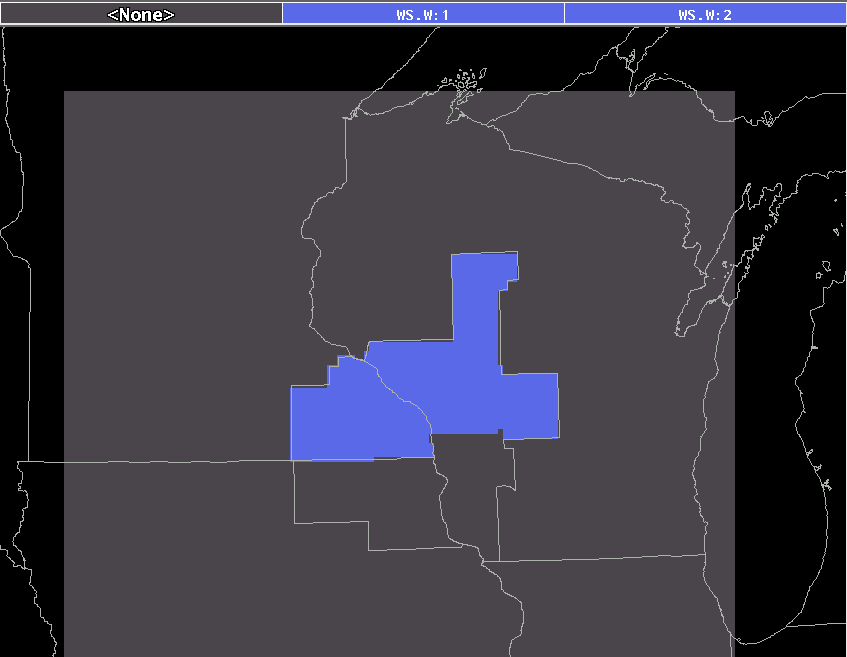
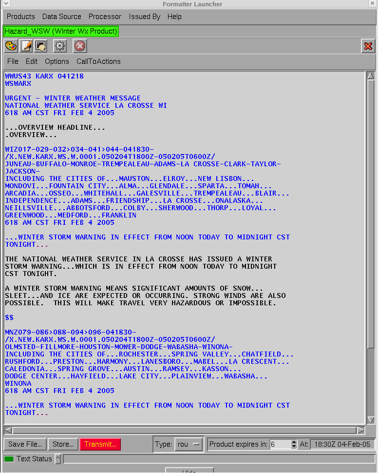

Hazard Grid Methodology
Create a new Hazard with MakeHazard
How to edit/delete existing hazards
How to force a single hazard to break into two
or more segments (WSW/NPW)
Creating
a New Hazard With
MakeHazard
This simple scenario describes using MakeHazard to create
one hazard. It assumes you
are starting with no hazards in your Hazard grid.
1. Start MakeHazard:

2. Select the Hazard you wish to create under the Hazard List.

3. Select the start and end time for the hazard you are creating.

4. Select the zones for this hazard. Note: If you do not select zones
at this step, the hazard type and time range will
be applied to the current active edit area in GFE.

5. Press Run/Dismiss. The tool will close, and a temporary hazard grid
will be created. Notice in the example
below, the grid name in hazISW, the temporary grid for an Ice Storm
Warning.

6. The final step to creating a simple hazard is to run the MergeHazards tool, which will recombine
all
temporary grids back into the actual hazard grid.

At this point, you can run the formatter launcher, and create your
hazard products.
How to use tools to edit combined
hazards
The general method for
working with combined hazards is this:
- Run SeparateHazards to break
the hazard grid into it's components.
- Click on the temporary hazard grid.
- Run MakeHazard and adjust the
times or areas of the grid.
- If you wish to remove the hazard completely, simply delete the
temporary grid.
- Run MergeHazards to recombine
the temporary grids.
- Save, Publish, and run Formatter launcher for the hazard.
The Hazards grid will be locked when you run the SeparateHazards
procedure to prevent conflicts from other users.
How force
segments for the same hazard
This method is only applicable to a
very special case of WSW/NPW/RFW product. Normally
GHG takes care of the segmentation of products.
The
one case where this method would be used
is if you have a single hazard type, and you want to force two segments
in the final product. For
instance, if you have a Winter Storm Warning (WS.W) from 12Z to 22Z,
but you need to talk
about snow in the west and freezing rain in the east, you might want to
break this into two
segments. Here is an example using MakeHazard:
Step 1: Run MakeHazard for the first
segment. Enter 1 in the ETN/Segment Number box. Press Run.
Step 2: Create the second segment. Enter 2 in the ETN/Segment Number
box. Press Run/Dismiss.

Step
3: Run MergeHazards.

Step 4: Save and publish your hazard grid. Although it looks like one
area, note the difference in the legend. Note that you can switch the Hazards
display to a combination of Image and Bounded Area, and then increase
the Line Width in order to see the different segments.

Step 5: Run the product. Notice that although VTEC codes are the same
and headlines are the same,
that the product has been forced into two segments.
